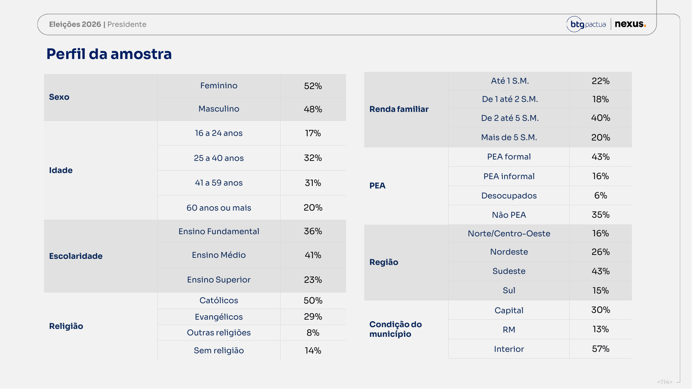
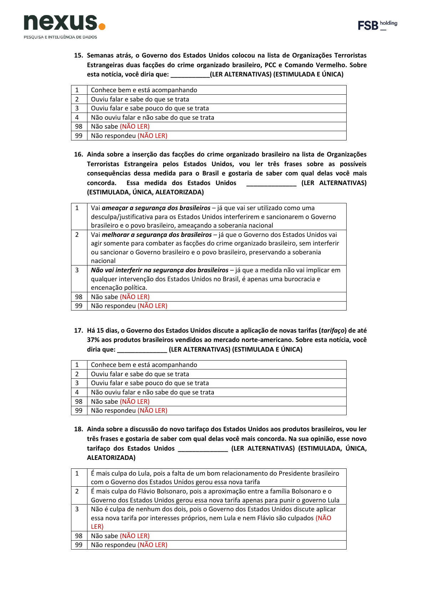
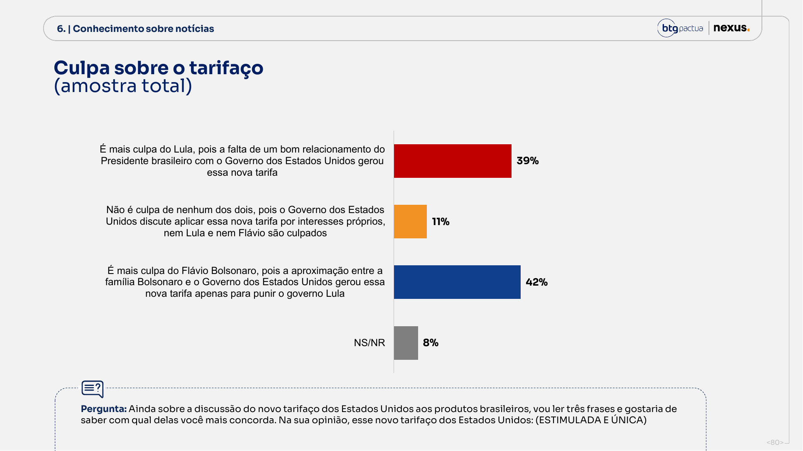
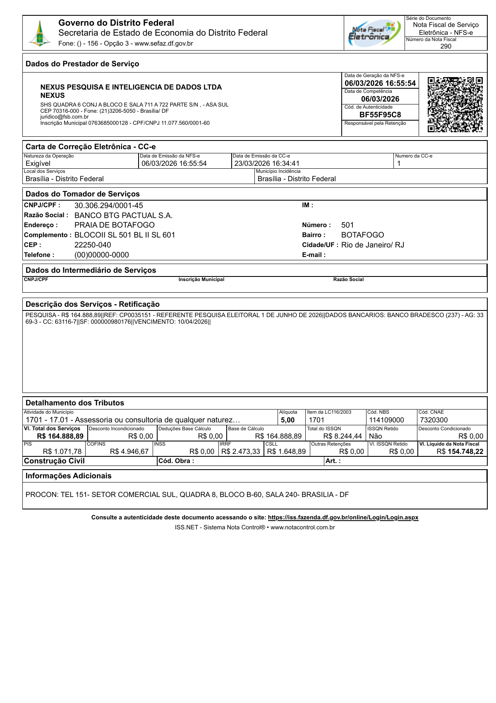
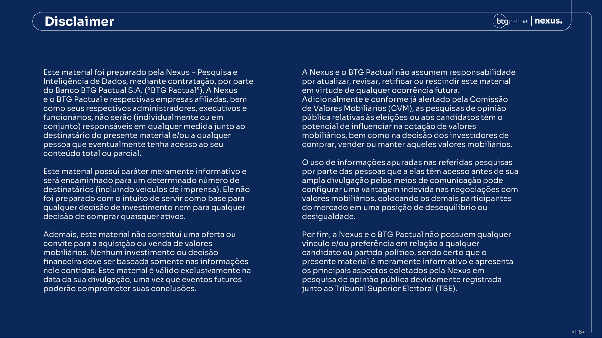
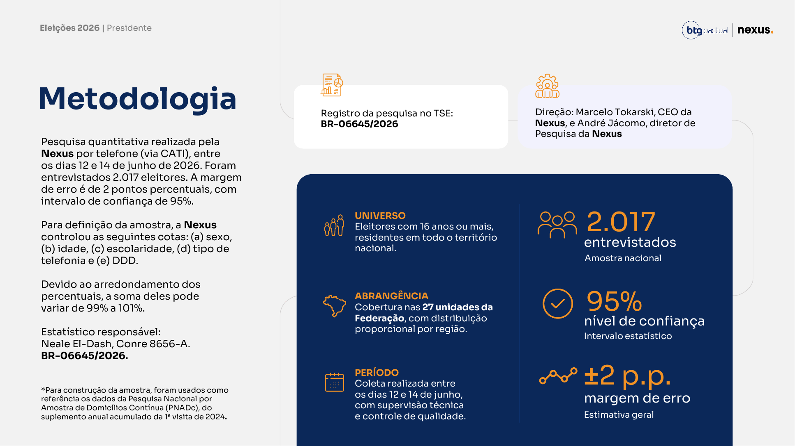
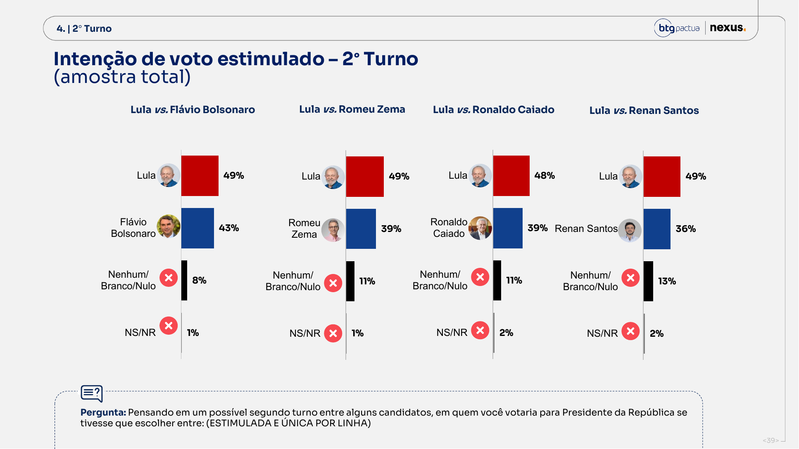
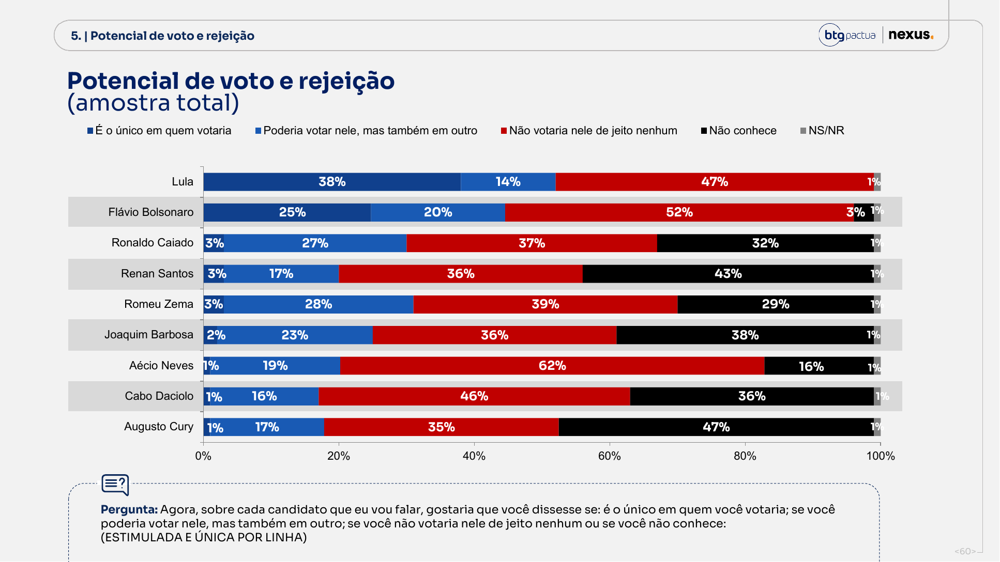
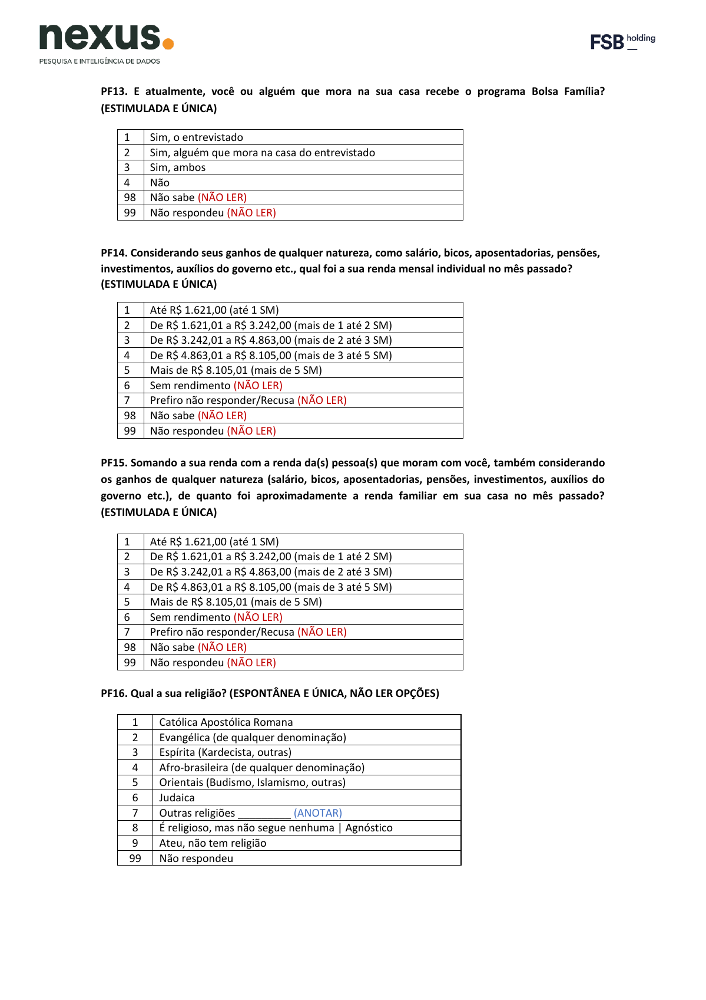

Voto vem antes do roteiro
Intenção de voto, 2º turno, potencial e rejeição são perguntados antes de governo, economia, facções, tarifaço e dívida. A ordem certa.
A pesquisa do banco fez o que a Quaest não fez: perguntou o voto antes do roteiro pesado e abriu boa parte do questionário. Mas fez também algo mais fino e mais perigoso. Vendeu movimento estatístico sem informar o efeito de desenho, montou uma série em que os cartões mudavam de uma rodada para a outra, trancou a saída neutra na pergunta do tarifaço e deixou o mercado financeiro sentado dentro da sala, por escrito, no próprio aviso legal do relatório.
Não há sinal honesto para gritar fraude. Há sinal forte para dizer outra coisa: pesquisa útil, paga por um agente com dinheiro no jogo, com fotografia plausível do eleitorado e transparência estatística insuficiente. O número principal de voto, o que abre a manchete, é mais limpo que o da Quaest. É a narrativa construída depois dele que precisa apanhar.
Intenção de voto, 2º turno, potencial e rejeição são perguntados antes de governo, economia, facções, tarifaço e dívida. A ordem certa.
Telefone por sorteio aleatório, cotas e ponderação inflam a incerteza. Sem o efeito de desenho publicado, a margem nacional plausível sobe para ±2,7 a ±3,1. Recorte pequeno vira ±6 a ±8.
Aldo sai, Joaquim entra, Aécio entra. A curva informa, mas não é uma régua de laboratório medindo sempre a mesma coisa.
A alternativa “não é culpa de nenhum dos dois” aparece como NÃO LER. O resultado 42 x 39 é culpa forçada, não opinião espontânea.
A crítica certa não é a fácil. A Nexus/BTG não contaminou a intenção de voto com o tarifaço: mediu o voto limpo, no começo. O problema vem depois, quando ela usa cruzamentos feitos já no fim do questionário, com o entrevistado aquecido pelos temas quentes, para sugerir uma relação de causa e efeito que o desenho da pesquisa não autoriza ninguém a afirmar.
O dossiê coloca lado a lado as quatro pesquisas BTG/Nexus dos últimos meses. Os gráficos abaixo fazem o trabalho que a manchete não faz: separam o que é movimento de verdade do que é apenas ruído de instrumento, de amostra e de arredondamento.
Junho é a maior vantagem de Lula em toda a série. Mas a diferença de 6 pontos tem de ser lida com a margem da própria diferença, que é maior, e não com o ±2 de cada candidato.
O cenário principal só é comparável desde abril. Junho inclui Aécio, e maio trocou Aldo por Joaquim.
O ótimo/bom encolhe e o regular engorda. Lula segura a aprovação, mas a qualidade desse apoio se deteriora por baixo.
Aprovação e desaprovação estão tecnicamente grudadas. A eleição ainda não virou plebiscito fechado contra o governo.
Flávio piora para 52% de “não votaria de jeito nenhum”. Lula volta a 47%, ainda alto.
O voto de Lula e Flávio é duro. O voto de Zema, Caiado e Renan é fluxo negociável.
Entre beneficiários, Lula continua perto de dois terços. Entre não beneficiários, a disputa fica muito mais estreita.
Interesse alto e comparecimento declarado acima de 90% quase sempre superestimam o que acontece na urna, porque gente que não vai votar costuma dizer que vai. Ainda assim, mostram a campanha começando a entrar no radar do eleitor.
Os recortes da simulação Lula x Flávio em junho. A cor mostra a diferença entre os dois em cada grupo: vermelho quando Lula vai melhor, azul quando Flávio vai melhor. São médias por segmento, não os dados individuais de cada entrevistado; cada grupo tem menos gente, então a margem de erro aqui é bem maior do que a nacional.
Cada candidato de 1º turno vira um nó próprio. A largura de cada fluxo é o voto dele que, no 2º turno Lula × Flávio, vai para Lula (vermelho), Flávio (azul) ou branco/nulo (cinza). O split por candidato é estimado multiplicando o voto de 1º turno pelos percentuais de transferência que a própria Nexus mede no cruzamento de 2º turno (Zema 25/64/11, Caiado 22/61/16, Daciolo 9/61/30, Cury 20/46/34 etc.) e é cruzado com os quatro cenários de 2º turno publicados (Lula × Flávio/Zema/Caiado/Renan). Não é matriz individual de microdados: é reconstrução de consistência, com arredondamento que fecha o agregado em 49 / 43 / 8.
Em miúdos — pense em cada candidato eliminado no 1º turno como um balde de água. No 2º turno, essa água tem de ir para algum lugar: um pouco escorre para Lula, um pouco para Flávio, um pouco evapora em voto branco e nulo. O gráfico só rastreia para onde foi cada gota. Some tudo no fim e tem de fechar exatamente o placar publicado, 49 a 43 com 8 perdidos. Nenhuma gota some no caminho.
Para o estatístico — é uma reconstrução por balanço de massa: o voto de 1º turno de cada nome é redistribuído pelas taxas de transferência que a própria Nexus afere no cruzamento de 2º turno e reconciliado contra os quatro cenários publicados. O agregado é forçado a fechar em 49 / 43 / 8, então cada coeficiente carrega a incerteza dos cruzamentos de origem (n por candidato pequeno) somada ao arredondamento. É consistência interna verificável, não matriz de transição estimada de microdados individuais.
Vermelho é vantagem Lula, azul é vantagem Flávio. Sudeste e interior são o tabuleiro real do 2º turno.
Cada barra é 100% do eleitor de 1º turno daquele nome. Daciolo (+52, evangélico), Zema (+39) e Caiado (+39) são as pontes mais fortes para Flávio; só Joaquim Barbosa, mais ao centro, escorre para Lula. Número à direita é o líquido Flávio − Lula.
Potencial de voto (eixo x: voto exclusivo + poderia votar) contra rejeição (eixo y: não votaria de jeito nenhum). Bolhas dimensionadas pelo voto de 2º turno contra Lula. Lula é o único acima de 50 de potencial; Flávio carrega a maior rejeição (52). Zema e Caiado têm rejeição menor, mas potencial preso abaixo de um terço — terceira via barata de rejeitar, cara de eleger.
Flávio lidera entre evangélicos por 59 a 34, homens por 49 a 42, mais de 5 SM por 51 a 41, Sul por 51 a 38 e Norte/Centro-Oeste por 52 a 40.
Lula faz 66 a 28 no Nordeste, 62 a 34 no fundamental, 56 a 39 em 60+, 59 a 34 até 1 SM e 57 a 37 de 1 a 2 SM.
Sudeste dá 45 a 45. Interior fica 47 a 45. É aqui que margem, turnout, campanha e nulo decidem.
A margem de ±2 p.p. estampada no relatório supõe um mundo mais limpo do que aquele em que a pesquisa foi feita: telefonema por número sorteado, com cotas e pesos. Como a Nexus não publica nem o efeito de desenho nem o tamanho efetivo da amostra, a auditoria é obrigada a refazer a conta sob hipóteses plausíveis.
A diferença medida é de +6 p.p. (Lula 49 contra Flávio 43). A barra mostra o intervalo de confiança da diferença entre os dois, e não da nota de cada um separadamente, sob três hipóteses de efeito de desenho. Na hipótese mais generosa o piso é +1,8; com efeito de desenho 1,5 cai para +0,9; com efeito 2,0 o piso desce a +0,1, quase encostando no zero. Há vantagem, sim. Mas chamar isso de "abriu e acabou" é estatística de vitrine.
Em miúdos — quando duas pesquisas dizem 49 e 43, a tentação é subtrair e cravar "6 de frente". Acontece que cada número desses já vem com sua própria incerteza, e quando você compara um com o outro as duas incertezas se somam. A margem da diferença é sempre maior que a margem de cada candidato. Por isso uma vantagem que parece folgada pode, no pior cenário, encolher quase até o empate.
Para o estatístico — o erro-padrão de uma diferença de proporções não é o erro de cada uma: para opções mutuamente exclusivas, var(p₁−p₂) = var(p₁) + var(p₂) + 2·cov(p₁,p₂), e a covariância é negativa, o que infla o resultado. Some a isso o efeito de desenho (deff) de uma amostra com cotas, ponderação e raking, que multiplica a variância e reduz o n efetivo (n_eff = n/deff). Com deff 2,0 o n efetivo cai à metade e o piso do intervalo da diferença vai a +0,1 p.p. Reportar ±2 sem deff nem n efetivo é divulgar precisão que o desenho não sustenta.
Com deff 2,0, o pior caso nacional vai para ±3,09 p.p. Em recorte de 300 pessoas, passa de ±7 p.p.
Todo cruzamento deveria vir com o tamanho efetivo da subamostra ao lado. Sem isso, a tabela de renda ou de religião vira munição de discurso, com casas decimais que a amostra não comporta.
| Estimativa | AAS | deff 1,5 | deff 2,0 | Leitura |
|---|---|---|---|---|
| Top-line nacional p=50%, n=2.017 | ±2,18 | ±2,67 | ±3,09 | O ±2 divulgado é otimista. |
| Vantagem Lula-Flávio no 2º turno, 49-43 | ±4,18 | ±5,12 | ±5,91 | Diferença de 6 pontos é forte, mas não blindada. |
| Vantagem Lula-Flávio no 1º turno, 42-33 | ±3,76 | ±4,60 | ±5,32 | Primeiro turno é mais confortável. |
Sexo e região batem razoavelmente com o que o TSE registra. A idade não bate. A Nexus usa como referência a PNADC 2024 visita 1, que é a foto da população em geral. Só que eleição não se decide na população: se decide no eleitorado. E o eleitorado tem cara, sexo, idade e estado de origem que o TSE conhece nome por nome.
Os jovens aparecem em número maior do que o TSE registra; os de 60 anos para cima, em número menor. Isso não vira automaticamente vantagem para um lado, mas a inconsistência de método é real e merece explicação.

Em miúdos — CATI/RDD quer dizer entrevista por telefone com o número discado por sorteio. O problema é simples: só entra na conta quem tem telefone e atende. Quem não atende, quem desliga, quem só usa o celular do trabalho, tudo isso fica de fora por um filtro que ninguém vê. Para corrigir, o instituto "pesa" as respostas, dando mais importância a uns grupos e menos a outros até a amostra parecer com o Brasil. O detalhe é que esse esticar e encolher tem um preço, e a Nexus não mostra o recibo.
Para o estatístico — duas falhas se somam. Primeira, a referência: ponderar idade, sexo e UF pela PNADC (população residente) em vez do cadastro do TSE (universo do eleitor) desalinha a calibração justamente na variável mais torta, a idade. Segunda, a opacidade: pós-estratificação e raking elevam a variância dos pesos, e CV²(w) entra direto no efeito de desenho. Sem publicar a distribuição dos pesos, a taxa de resposta e o n efetivo, é impossível auditar quanto a amostra foi esticada para fechar as cotas, nem recalcular a margem real por recorte.
Nexus: 40% até 2 SM e 20% acima de 5 SM. PNADC local: ~42,9% dos domicílios até 2 SM e ~21,4% acima de 5 SM.
O sorteio cobre fixo e celular, mas o relatório não diz quantas tentativas foram feitas, quantos recusaram, quantos retornos houve, qual a proporção de fixo e celular, nem quem ficou de fora por simplesmente não atender.
O registro menciona ponderação por renda e força de trabalho. Sem os pesos finais na mesa, não há como saber quanto a amostra foi esticada para encaixar nas cotas.
O ponto justo aqui é separar duas coisas: como a pergunta foi feita e como o resultado foi montado. No campo, o voto vem antes dos temas quentes, e isso é correto. Na hora de editar o PDF, porém, o bloco de notícias ruins é posto antes da avaliação de governo, o que ajuda a sugerir uma causa onde há só vizinhança de página.

| Pergunta | Problema |
|---|---|
| Terceira via: “Qual?” | O relatório mostra 24%, mas não publica os nomes anotados. |
| Renda individual | Perguntada; perfil público usa renda familiar. |
| Cor/raça | Perguntada no encerramento; não aparece no perfil. |
| Trabalho, vínculo, CNPJ | Virou PEA formal/informal sem abrir engenharia. |
| Comparecimento 2018/2022 | Usado em cruzamento; sem topline autônomo suficiente. |
A pergunta 18 oferece "culpa de Lula" ou "culpa de Flávio" como as duas alternativas que o entrevistador lê em voz alta. A saída neutra, a de que o tarifaço é decisão geopolítica que não é culpa de nenhum dos dois, existe no formulário, mas o entrevistador é instruído a não lê-la. Quem não conhece a opção de cor não a escolhe. O desenho empurra o eleitor para apontar um culpado partidário.
Em miúdos — é a velha pergunta "você já parou de bater na sua mãe?". A resposta honesta, "nunca bati", nem está no cardápio. Aqui o cardápio é "culpa do Lula" ou "culpa do Flávio", e a resposta sensata, "isso é briga de tarifa entre governos, não é culpa de nenhum dos dois", existe escondida no fim do formulário com a etiqueta NÃO LER. Quem responde no telefone nunca fica sabendo que ela existe. O resultado parece opinião espontânea, mas é escolha forçada dentro de um menu trancado.
O 42 x 39 tem cara de equilíbrio nacional. Mas é o equilíbrio que sobra depois de esconder a terceira saída de quem responde.
Eleitor de Lula culpa Flávio; eleitor de Flávio culpa Lula. O bloco mede identidade política mais do que informação factual.

Quem pagou a conta faz parte da história. Isso não invalida a pesquisa. O que invalida é fingir que ela caiu do céu, neutra, sem ninguém com interesse no resultado. O próprio relatório admite, por escrito, que uma pesquisa eleitoral pode mexer na cotação de ativos e que quem tem acesso antecipado a ela pode obter vantagem indevida. Não fomos nós que dissemos. Foi o banco.
NFS-e 290 da Nexus para Banco BTG Pactual. Registro TSE BR-06645/2026 repete o valor e o contratante.
O texto alerta para impacto em preços de ativos e vantagem indevida de quem acessa antes da ampla divulgação.
Fora Tarcísio do tabuleiro, parte do mercado pode preferir a previsibilidade de um governo conhecido ao risco de uma aposta dinástica. É hipótese de leitura, registrada como tal, não acusação.


As imagens abaixo são páginas renderizadas dos PDFs locais. Elas dão lastro visual aos achados sem depender de print solto em rede social.




A Nexus/BTG entregou uma pesquisa útil, porém não auditável no padrão que uma eleição presidencial exige. O voto principal está mais bem protegido do que se imaginava à primeira vista. Já a história contada em cima dele é bem menos inocente do que aparenta. Pesquisa boa, bula incompleta.
Lula lidera; Flávio é o melhor adversário oposicionista; Zema/Caiado não melhoram o 2º turno; governo está no fio.
Junho tem sinal pró-Lula. Mas variação entre rodadas independentes, com o cartão de candidatos trocando e sem o efeito de desenho na mesa, é indício, não veredito estatístico.
Sem dados individuais, sem pesos, sem efeito de desenho, sem tamanho efetivo e sem margem por recorte, o que se tem é o relatório de quem encomendou, não uma auditoria pública.
O código, a metodologia e este próprio dossiê são abertos. Os PDFs das pesquisas e as bases pesadas ficam locais (não versionadas) por serem material proprietário de terceiros e arquivos grandes, conforme a política de dados do projeto.
Repositório público: github.com/ArvorCo/PNAD — pipeline PNADC/TSE, scripts de auditoria e o código-fonte deste relatório.